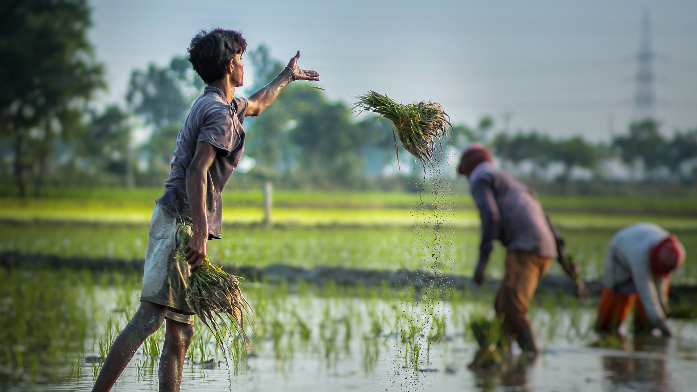

Cultivation Guide
This comprehensive guide is tailored to help farmers and growers make informed decisions throughout the agricultural cycle — from soil preparation and seed selection to irrigation, pest control, and harvesting.
Your Farming Knowledge Hub
Learn best practices for sustainable and productive farming. Our step-by-step tutorials help you grow better crops, use resources wisely, and implement modern agricultural methods effectively.
Browse by Category

By Crop Type
Guides specific to crops like wheat, rice, maize, and vegetables.

By Season
Seasonal guides for Kharif, Rabi, and Zaid crops with timeline-based tips.

By Method
Techniques such as organic, vertical, hydroponic, and precision farming.
Step-by-Step Farming Tutorials

Rice Plantation Guide
Learn how to prepare soil, choose seeds, water efficiently, and manage pests.
Organic Vegetable Farming
Step-by-step guide to growing pesticide-free vegetables using organic inputs.
Drip Irrigation Setup
Understand how to install drip systems for water conservation and crop health.